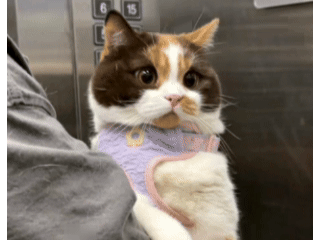

I am currently a Researcher at the ByteDance Seed Vision Application Team, working on Seedance 2.0. Previously, I was part of the ByteDance Intelligent Creation Team, where I focused on human-centric generation and editing tasks, with my primary contribution being the DreamID series (including DreamID, DreamID-V and DreamID-Omni). Prior to that, I interned at BAAI and Zhipu AI, working on foundational image generation models.
I received my Master's degree from BUPT in 2024, under the supervision of Prof.Xiaojie Wang, and my Bachelor's degree from Xidian University in 2021.
My research interests lie in Large Multimodal Models, as well as all product-related topics associated with multimodality. I am always open to collaborations and discussions on multimodal technology and product innovation. Feel free to reach out!
News
Selected Online Projects

Seedance2.0 🔥
Unified multimodal audio-video joint generation Model

DreamID 👑
Personalized AI Photo in Jimeng

DreamID-V 👸
Personalized AI Video in CapCut

Video Transfer⚡️
Video Effects Transfer in Douyin

Personalized AI Image 👸
AI Image in Douyin

Wool curls for everything! 🧑🦱
Video Effects in CapCut
Publications
(* equal contribution)
Xu Guo*, Fulong Ye*, Qichao Sun*, Liyang Chen, Bingchuan Li, Pengze Zhang, Jiawei Liu, Songtao Zhao, Qian He, Xiangwang Hou
Tech Report, 2026
Paper (arXiv) / Project Page / 🔥Codes (GitHub)

Xu Guo*, Fulong Ye*, Xinghui Li*, Pengqi Tu, Pengze Zhang, Qichao Sun, Songtao Zhao, Qian He
Tech Report, 2026
Paper (arXiv) / Project Page / 🔥Codes (GitHub)

Pengze Zhang, Yanze Wu, Mengtian Li, Xu Bai, Songtao Zhao, Fulong Ye, Chong Mou, Xinghui Li, Zhuowei chen, Qian He, Mingyun Gao
CVPR, 2026
Paper (arXiv) / Project Page / 🔥Codes (GitHub)
Chong Mou, Qichao Sun, Yanze Wu, Pengze Zhang, Xinghui Li, Fulong Ye, Songtao Zhao, Qian He
Tech Report, 2025
Paper (arXiv) / Project Page / 🔥Codes (GitHub)

Fulong Ye, Miao Hua, Pengze Zhang, Xinghui Li, Qichao Sun, Songtao Zhao, Qian He, Xinglong Wu
Siggrah Asia, 2025
Paper (arXiv) / Project Page / 🔥Codes (GitHub)

Xinghui Li, Qichao Sun, Pengze Zhang, Fulong Ye, Zhichao Liao, Wanquan Feng, Songtao Zhao, Qian He
CVPR, 2025
Paper (arXiv) / Project Page / 🔥Codes (GitHub)

Fulong Ye, Guang Liu, Xinya Wu, Ledell Wu
AAAI, 2024
Paper (arXiv) / 🔥Codes (GitHub)
 / 🤗 demo
/ 🤗 demo
Zhongzhi Chen, Guang Liu, Bo-Wen Zhang, Fulong Ye, Qinghong Yang, Ledell Wu
ACL, 2023
Paper (arXiv) / 🔥Codes (GitHub)
Fulong Ye, Yuxing Long, Fangxiang Feng, Xiaojie Wang
ACM MM, 2023
Paper (arXiv)
Yuxing Long, Binyuan Hui, Fulong Ye, Yangyang Li, Zhuoxin Han, Caixia Yuan, Yongbin Li, Xiaojie Wang
AAAI, 2023
Paper (arXiv)
Awards
2019.11 National First Prize, National College Students Mathematical Modeling Competition
2018.10 Champion of the University Group, the 40th Hong Kong Rowing Championships
2023.12 Schlumberger Corporate Scholarship, School of Artificial Intelligence, BUPT (Top 3% of the school)
Experiences